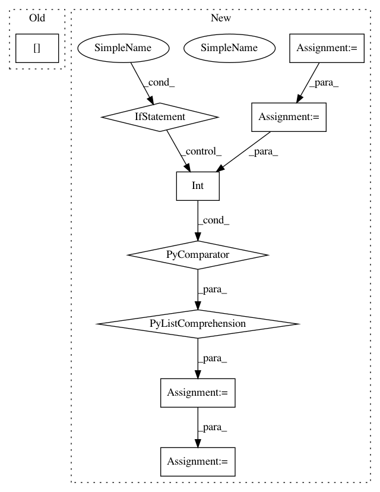

85aabb5014e22659ac722280607a1f4b44e1fb32,tslearn/shapelets.py,ShapeletModel,fit,#ShapeletModel#Any#Any#,380
Before Change
if y_.ndim == 1 or y_.shape[1] == 1:
n_classes = 2
else:
n_classes = y_.shape[1]
if self.n_shapelets_per_size is None:
sizes = grabocka_params_to_shapelet_size_dict(n_ts, sz, n_classes,
self.shapelet_length,
After Change
self.label_to_ind_ = None
self.d_ = d
self.classes_ = [int(lab) for lab in set(y)]
n_labels = len(self.classes_)
self.label_to_ind_ = {int(lab): ind
for ind, lab in enumerate(self.classes_)}
y_ind = numpy.array(
[self.label_to_ind_[lab] for lab in y]
)
y_ = to_categorical(y_ind)
if n_labels == 2:
y_ = y_[:, 1:] // Keep only indicator of max index class
if self.n_shapelets_per_size is None:
In pattern: SUPERPATTERN
Frequency: 4
Non-data size: 9
Instances
Project Name: rtavenar/tslearn
Commit Name: 85aabb5014e22659ac722280607a1f4b44e1fb32
Time: 2020-05-03
Author: romain.tavenard@univ-rennes2.fr
File Name: tslearn/shapelets.py
Class Name: ShapeletModel
Method Name: fit
Project Name: PyMVPA/PyMVPA
Commit Name: 226340622c3c9f6108d6efbed2f9967e2679802e
Time: 2009-04-19
Author: psederberg@gmail.com
File Name: mvpa/clfs/glmnet.py
Class Name: GLMNET
Method Name: _predict
Project Name: HyperGAN/HyperGAN
Commit Name: e4ee8e989f0ee8138798c290233c1c3ec7d3fb61
Time: 2016-10-29
Author: martyn@255bits.com
File Name: lib/gan.py
Class Name:
Method Name: generator
Project Name: deepfakes/faceswap
Commit Name: e9ea863b293c703aa7612bb9163eff10e9d6ae9a
Time: 2019-01-06
Author: julien.seitz@gmail.com
File Name: plugins/extract/detect/dlib_cnn.py
Class Name: Detect
Method Name: process_output